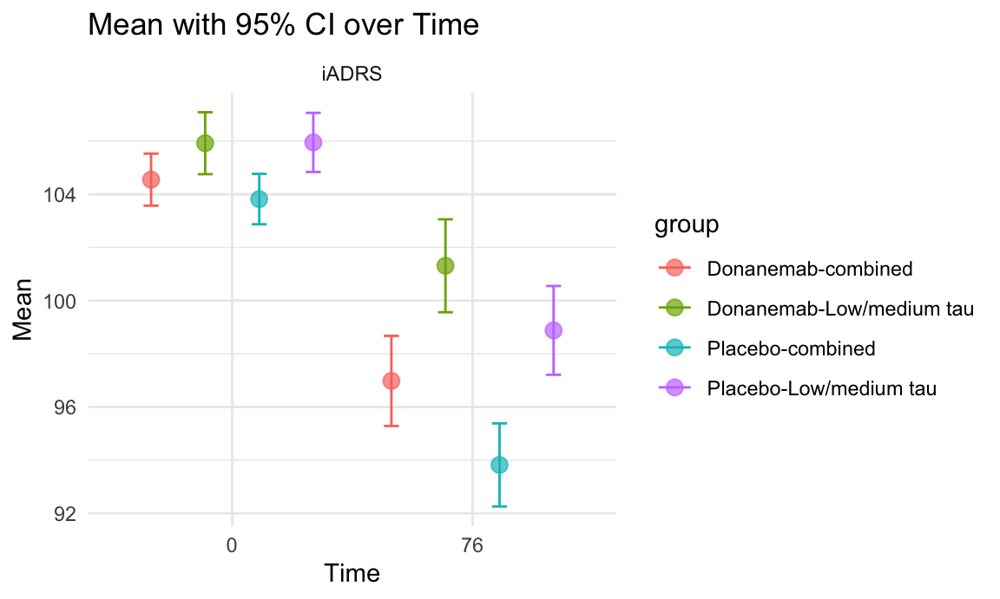
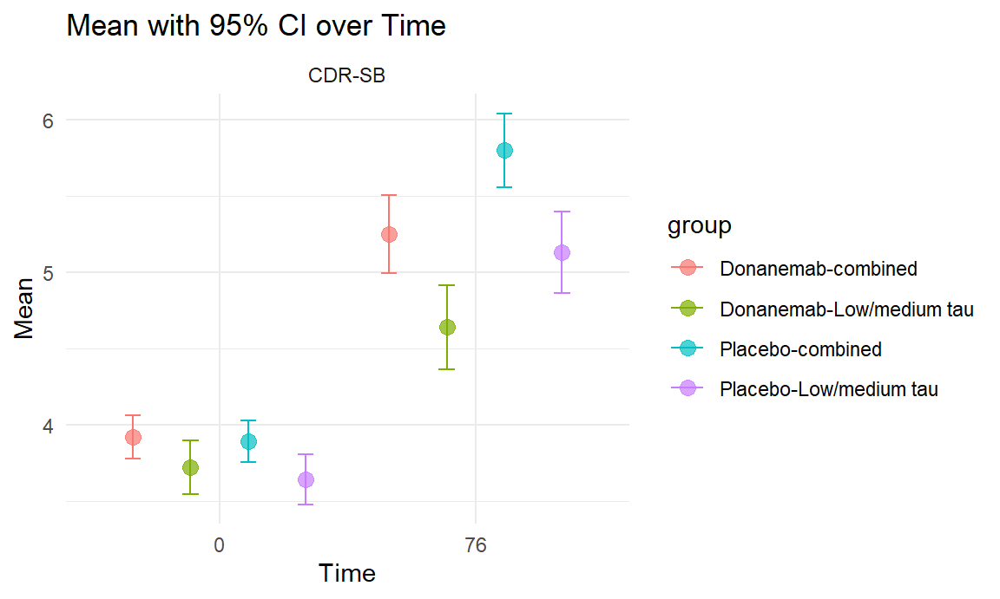
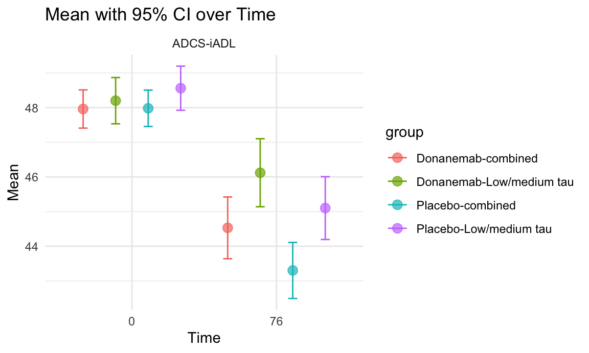
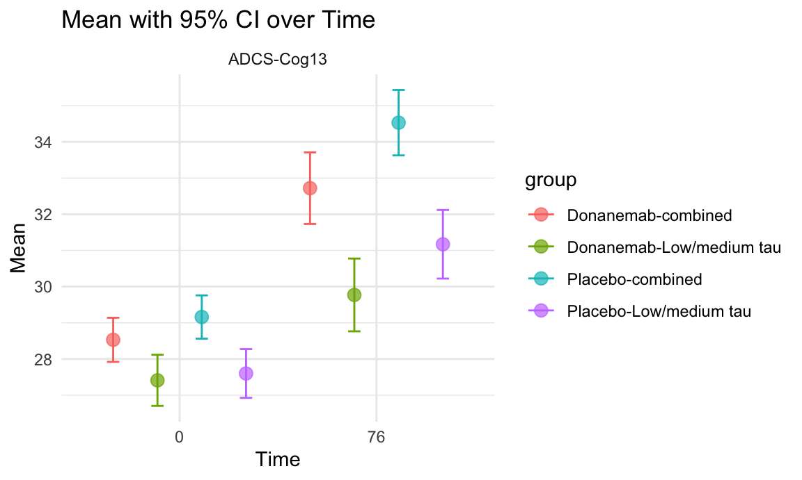
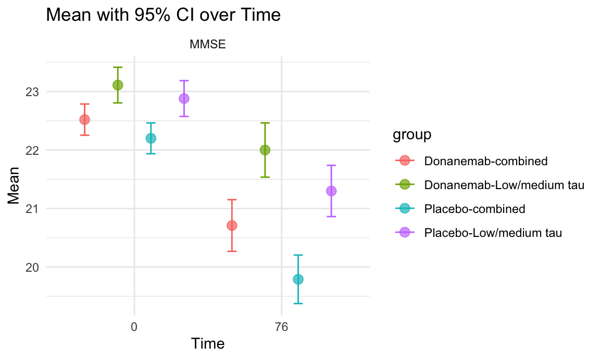
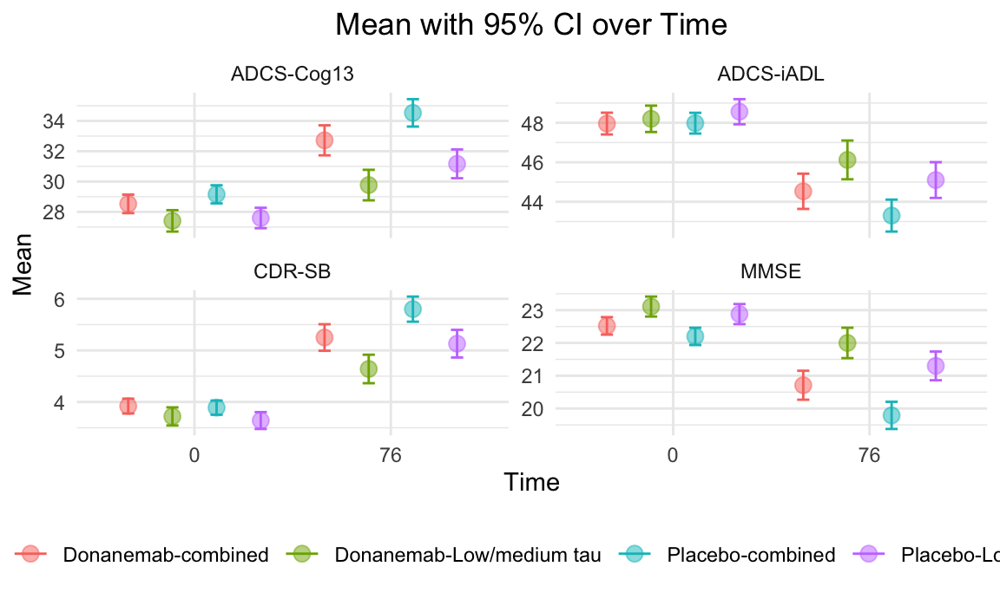

Clinical Trials
Clinical Trials Pipeline
In our quest to deepen the understanding of Alzheimer’s disease and its treatment landscape, we have developed an innovative Shiny application designed to visualize the clinical trials of Alzheimer’s drugs across the United States. This interactive tool is a significant stride in making complex trial data accessible, which label all trials on the map and have regional statistics based on zoom size. The following screenshot offers a glimpse into the app’s capabilities, and the full dashboard can be accessed [here].

Lecanemab and Donanemab
Participants’ Baseline Demographics for both drugs
sex_df=
readxl::read_excel("data/newdrugdemographic.xlsx",sheet="Sex", range = "A1:C5") |>
janitor::clean_names()
sex_df |>
plot_ly(x=~drug, y=~sex_prop, type = "bar", color = ~sex) |>
layout(barmode = "stack",
title = "Distribution of Participants' Baseline Sex by drugs",
xaxis = list(title = "Drug"),
yaxis = list(title = "Percentage (%)"),
width=500)- From the plot, we can see that there are more female participants in Donanemab’s clinical trial than that in Lecanemab’s clinical trial.
race_df=
readxl::read_excel("data/newdrugdemographic.xlsx",sheet="Race", range = "A1:C9") |>
janitor::clean_names()
race_df |>
mutate(race = fct_reorder(race, -race_prop)) |>
plot_ly(x=~drug, y=~race_prop, type = "bar", color = ~race) |>
layout(barmode = "stack",
title = "Distribution of Participants' Baseline Race by drugs",
xaxis = list(title = "Drug"),
yaxis = list(title = "Percentage (%)"),
width=500)- From the plot, we can see there is more diversity in Lecanemab’s clinical trial. Races other than white occupies a larger proportion of participants in Lecanemab’s clinical trial than that in Donanemab’s clinical trial than that in Lecanemab’s clinical trial, especially Asians.
subplot(sex_df |>
plot_ly(x=~drug, y=~sex_prop, type = "bar", color = ~sex) |>
layout(barmode = "stack",
title = "Distribution of Participants' Baseline Sex by drugs",
xaxis = list(title = "Drug"),
yaxis = list(title = "Percentage (%)"),
width=500),
race_df |>
mutate(race = fct_reorder(race, -race_prop)) |>
plot_ly(x=~drug, y=~race_prop, type = "bar", color = ~race) |>
layout(barmode = "stack",
title = "Distribution of Participants' Baseline Race by drugs",
xaxis = list(title = "Drug"),
yaxis = list(title = "Percentage (%)"),
width=500))combine_mean_sd = function(df, group = ""){
n = df |> filter(str_detect(group, "Low/medium tau")) |> pull(sample_size) # number in group 1
m = df |> filter(str_detect(group, "combined")) |> pull(sample_size) # number in group 2
sx = df |> filter(str_detect(group, "Low/medium tau")) |> pull(sd) # sd of group 1
sy = df |> filter(str_detect(group, "combined")) |> pull(sd) # sd of group 2
x_bar = df |> filter(str_detect(group, "Low/medium tau")) |> pull(mean) # mean of group 1
y_bar = df |> filter(str_detect(group, "combined")) |> pull(mean) # mean of group 2
combined_mean = (n * x_bar + m * y_bar) / (n + m)
combined_sd = sqrt(((n-1)*sx^2+(m-1)*sy^2)/(n+m-1)+(n*m*(x_bar-y_bar)^2)/((n+m)*(n+m-1)))
combined_samplesize = n + m
combined_ci_lower = combined_mean - 1.96*combined_sd
combined_ci_upper = combined_mean + 1.96*combined_sd
return (tibble(
outcome = df |> head(1) |> pull(outcome),
group = group,
mean = combined_mean,
sd = combined_sd,
sample_size = combined_samplesize,
ci_lower = combined_ci_lower,
ci_upper = combined_ci_upper,
time = 0))}iADRS <- read_excel("data/Donanemab_.xlsx", sheet = "1")
CDR_SB <- read_excel("data/Donanemab_.xlsx", sheet = "2")
ADCS_iADL <- read_excel("data/Donanemab_.xlsx", sheet = "3")
ADAS_Cog13 <- read_excel("data/Donanemab_.xlsx", sheet = "4")
MMSE <- read_excel("data/Donanemab_.xlsx", sheet = "5")
lec_result <- read_excel("data/Lecanemab.xlsx", sheet = "result") |>
filter(time == 0,
outcome %in% c("CDR-SB", "ADAS-Cog14", "MMSE")) |>
mutate(drug = "Lecanemab",
ci_lower = mean - 1.96*sd,
ci_upper = mean + 1.96*sd) |>
select(drug, everything())
don_result = bind_rows(
combine_mean_sd(CDR_SB |> filter(time == 0, str_detect(group, "Donanemab")), "Donanemab"),
combine_mean_sd(CDR_SB |> filter(time == 0, str_detect(group, "Placebo")), "Placebo"),
combine_mean_sd(ADAS_Cog13 |> filter(time == 0, str_detect(group, "Donanemab")), "Donanemab"),
combine_mean_sd(ADAS_Cog13 |> filter(time == 0, str_detect(group, "Placebo")), "Placebo"),
combine_mean_sd(MMSE |> filter(time == 0, str_detect(group, "Donanemab")), "Donanemab"),
combine_mean_sd(MMSE |> filter(time == 0, str_detect(group, "Placebo")), "Placebo")
) |>
mutate(drug = "Donanemab") |>
select(drug, everything())
ggplot(bind_rows(lec_result, don_result) |> filter (!(outcome %in% c("CDR-SB", "MMSE") & group == "Placebo")), aes(x = as.factor(time), y = mean, fill = group, color = group)) +
geom_point(position = position_dodge(0.9), size = 3, alpha = 0.7) +
geom_errorbar(aes(ymin = ci_lower, ymax = ci_upper), position = position_dodge(0.9), width = 0.25) +
facet_wrap(~outcome, scales = "free_y") +
labs(title = "Mean with 95% CI over Time",
x = "Time",
y = "Mean") +
theme_minimal()
Donanemab
The outcomes listed include iADRS (Integrated Alzheimer’s Disease Rating Scale), MMSE (Mini-Mental State Examination), and other clinical assessments. The table provides valuable insights into the efficacy of donanemab compared to placebo in slowing the progression of Alzheimer’s disease over the 76-week period in the different populations studied.
In the TRAILBLAZER-ALZ 2 clinical trial, the participants were divided into two populations based on their tau biomarker levels: the low/medium tau population and the high tau population. Tau is a protein that accumulates in the brain of people with Alzheimer’s disease and is associated with neurodegeneration.
The low/medium tau population included participants with mild cognitive impairment or early Alzheimer’s disease who had low or intermediate levels of tau biomarkers in their cerebrospinal fluid (CSF). The high tau population included participants with early Alzheimer’s disease who had high levels of tau biomarkers in their CSF.
The combined population included all participants in the trial, regardless of their tau biomarker levels. The purpose of dividing the participants into these populations was to assess the efficacy of donanemab in different subgroups of patients with Alzheimer’s disease.
iADRS
The Integrated Alzheimer’s Disease Rating Scale (iADRS) is a comprehensive assessment tool used to measure the progression of Alzheimer’s disease. It combines the 13-item cognitive subscale of the Alzheimer’s Disease Assessment Scale (ADAS-Cog13) with the Alzheimer’s Disease Cooperative Study—Instrumental Activities of Daily Living (ADCS-iADL). By integrating these measures, the iADRS provides a holistic evaluation of both cognitive function and daily living activities in individuals with Alzheimer’s disease.
iADRS <- read_excel("data/Donanemab_.xlsx", sheet = "1")
ggplot(iADRS, aes(x = as.factor(time), y = mean, fill = group, color = group)) +
geom_point(position = position_dodge(0.9), size = 3, alpha = 0.7) +
geom_errorbar(aes(ymin = ci_lower, ymax = ci_upper), position = position_dodge(0.9), width = 0.25) +
facet_wrap(~outcome, scales = "free_y") +
labs(title = "Mean with 95% CI over Time",
x = "Time",
y = "Mean") +
theme_minimal()
The results show that treatment with donanemab resulted in a statistically significant slowing of clinical progression compared to placebo in both the low/medium tau and combined populations.
CDR-SB
The Clinical Dementia Rating Scale Sum of Boxes (CDR-SB) is a widely used assessment tool for evaluating the severity of dementia. It is a composite score derived from the Clinical Dementia Rating (CDR) scale, which is used to assess the cognitive and functional abilities of individuals with dementia.
The CDR-SB incorporates ratings across six domains: memory, orientation, judgment and problem solving, community affairs, home and hobbies, and personal care. Each domain is rated on a scale from 0 (no impairment) to 3 (severe impairment), and the total CDR-SB score ranges from 0 to 18, with higher scores indicating greater clinical impairment.
CDR_SB <- read_excel("data/Donanemab_.xlsx", sheet = "2")
ggplot(CDR_SB, aes(x = as.factor(time), y = mean, fill = group, color = group)) +
geom_point(position = position_dodge(0.9), size = 3, alpha = 0.7) +
geom_errorbar(aes(ymin = ci_lower, ymax = ci_upper), position = position_dodge(0.9), width = 0.25) +
facet_wrap(~outcome, scales = "free_y") +
labs(title = "Mean with 95% CI over Time",
x = "Time",
y = "Mean") +
theme_minimal()
The trial results demonstrated that treatment with donanemab resulted in a statistically significant slowing of clinical progression as measured by the CDR-SB, indicating its potential efficacy in addressing the symptoms and functional decline associated with early symptomatic Alzheimer’s disease.
ADCS-iADL
The Alzheimer’s Disease Cooperative Study—Instrumental Activities of Daily Living (ADCS-iADL) is a measurement tool used to assess the functional abilities of individuals with Alzheimer’s disease. It is designed to evaluate a person’s capacity to perform various instrumental activities of daily living, such as managing finances, using the telephone, shopping, preparing meals, doing housework, and managing medications.
The ADCS-iADL scale provides a structured assessment of a person’s functional independence and is particularly relevant for evaluating the impact of Alzheimer’s disease on daily activities beyond basic self-care tasks. The scale typically ranges from 0 to 59, with lower scores indicating greater impairment in instrumental activities of daily living.
ADCS_iADL <- read_excel("data/Donanemab_.xlsx", sheet = "3")
ggplot(ADCS_iADL, aes(x = as.factor(time), y = mean, fill = group, color = group)) +
geom_point(position = position_dodge(0.9), size = 3, alpha = 0.7) +
geom_errorbar(aes(ymin = ci_lower, ymax = ci_upper), position = position_dodge(0.9), width = 0.25) +
facet_wrap(~outcome, scales = "free_y") +
labs(title = "Mean with 95% CI over Time",
x = "Time",
y = "Mean") +
theme_minimal()
In the trial results, changes in ADCS-iADL reflected the impact of donanemab treatment on patients’ functioning of daily living. By comparing changes in ADCS-iADL scores between the donanemab group and the placebo group, it was possible to assess the extent to which donanemab affected patients’ functioning of daily living.
ADCS-CGIC
The Alzheimer’s Disease Cooperative Study—Clinical Global Impression of Change (ADCS-CGIC) is a measurement tool used to assess the overall clinical status and change over time in individuals with Alzheimer’s disease. It is designed to provide a global assessment of a patient’s condition, taking into account cognitive, functional, and behavioral aspects.
ADAS_Cog13 <- read_excel("data/Donanemab_.xlsx", sheet = "4")
ggplot(ADAS_Cog13, aes(x = as.factor(time), y = mean, fill = group, color = group)) +
geom_point(position = position_dodge(0.9), size = 3, alpha = 0.7) +
geom_errorbar(aes(ymin = ci_lower, ymax = ci_upper), position = position_dodge(0.9), width = 0.25) +
facet_wrap(~outcome, scales = "free_y") +
labs(title = "Mean with 95% CI over Time",
x = "Time",
y = "Mean") +
theme_minimal()
A greater reduction in the least squares mean change from baseline to 76 weeks in the donanemab group compared to the placebo group would indicate a potential positive effect of donanemab on cognitive function.
MMSE
The Mini-Mental State Examination (MMSE) is a widely used screening tool for cognitive impairment and is often employed in clinical and research settings to assess cognitive function, particularly in the context of dementia. The MMSE evaluates various cognitive domains, including orientation, memory, attention, language, and visuospatial abilities.
MMSE <- read_excel("data/Donanemab_.xlsx", sheet = "5")
ggplot(MMSE, aes(x = as.factor(time), y = mean, fill = group, color = group)) +
geom_point(position = position_dodge(0.9), size = 3, alpha = 0.7) +
geom_errorbar(aes(ymin = ci_lower, ymax = ci_upper), position = position_dodge(0.9), width = 0.25) +
facet_wrap(~outcome, scales = "free_y") +
labs(title = "Mean with 95% CI over Time",
x = "Time",
y = "Mean") +
theme_minimal()
The MMSE scores provide information about the cognitive function of the participants in the study. The mean scores and standard deviations can be used to compare the cognitive performance of the donanemab group and the placebo group. A higher mean score in the donanemab group compared to the placebo group would suggest a potential positive effect of donanemab on cognitive function.
Survival Analysis
The Phase III trials of Lecanemab and Donanemab both use cumulative hazard ratio to indicate the risk of progression assessed using CDR-SB score. The hazard plot for Donanemab is as following
Don_KM =
read_excel("./Data/Donanemab.xlsx", sheet = "K-M", range = "A1:D16") |>
janitor::clean_names()
plot_ly(Don_KM |>
filter(test == "CDR-SB") |>
pivot_longer(
donanemab:placebo,
names_to = "drug",
values_to = "ratio"
), x = ~time, y = ~ratio, color = ~drug, line = list(shape = "hv"), colors = "viridis") |>
layout(title = "Hazard Plot for Donanemab",
xaxis = list(title = "Days from First Infusion"),
yaxis = list(title = "Percentage of Participants Progression"))- The hazard ratio for the combined group of Donanemab was found to be 0.623 with a 95% confidence interval of 0.519 to 0.748, indicating a significant reduction in the risk associated with the progression of Alzheimer’s disease as measured by the CDR-SB score. In comparison, Lecanemab demonstrated a hazard ratio of 0.69, also suggesting a reduced risk, albeit to a slightly lesser extent than Donanemab. These results indicate that both drugs are effective in slowing the progression of Alzheimer’s disease, with Donanemab showing a marginally higher efficacy in this regard.
Adverse Events
General Overview
As we progress in our comprehensive exploration of Alzheimer’s disease and its treatment options, we now turn our focus to a critical aspect of drug evaluation: the analysis of adverse events associated with the two promising drugs.
lec_safety = read_excel("./Data/Lecanemab.xlsx", sheet = "safety", range = "A1:C5") |>
janitor::clean_names()
don_safety = read_excel("./Data/Donanemab.xlsx", sheet = "safety", range = "A1:C5") |>
janitor::clean_names()
merge_safety = left_join(lec_safety, don_safety, by = "events")plot_ly(merge_safety |>
mutate(events = fct_reorder(events, -lecanemab)) |>
pivot_longer(
lecanemab:donanemab_placebo,
names_to = "drug",
values_to = "cases"
),
x = ~events, y = ~cases, color = ~drug, type = 'bar', colors = "viridis") |>
layout(title = "Barplot for Adverse Events",
xaxis = list(title = "Adverse Event"),
yaxis = list(title = "Number of participants"))- The Lecanemab group experienced a 0.7% death rate (6 cases) compared to 0.8% (7 cases) in the placebo group, with no deaths linked to Lecanemab or ARIA. Serious adverse events were slightly higher in the Lecanemab group at 14.0% (126 cases) versus 11.3% (101 cases) in the placebo.
- For Donanemab, the death rate was 1.9% (16 cases) in the treatment group against 1.1% (10 cases) in the placebo, with serious adverse events at 17.4% (148 cases) for Donanemab and 15.8% (138 cases) for the placebo. These results suggest a similar safety profile for both drugs compared to their respective placebo groups.
safety_test = function(a, b, c, d, n1, n2){
RD = round(a/n1 - b/n2, 4)
RR = round((a/n1)/(b/n2), 4)
OR = round((a*d)/(b*c), 4)
Chis = round(prop.test(x = c(a, b), n = c(c, d), alternative = "two.sided", correct = FALSE)$statistic, 4)
p_value = round(prop.test(x = c(a, b), n = c(n1, n2), alternative = "two.sided", correct = FALSE)$p.value, 6)
return (tibble(Risk_Diff = RD, Risk_Ratio = RR, Odds_Ratio = OR, Xsquared = Chis, P.value = p_value))
}lec_safety_test = safety_test(126, 101, 772, 796, 898, 897)
don_safety_test = safety_test(148, 138, 705, 736, 853, 874)
comp_safety_test = safety_test(126, 148, 772, 705, 898, 853)
safety_merge = bind_rows(lec_safety_test, don_safety_test, comp_safety_test) |>
mutate(Test = c("Lec vs Placebo", "Don vs Placebo", "Lec vs Don")) |>
select(Test, everything())
kable(safety_merge)| Test | Risk_Diff | Risk_Ratio | Odds_Ratio | Xsquared | P.value |
|---|---|---|---|---|---|
| Lec vs Placebo | 0.0277 | 1.2461 | 1.2863 | 4.1774 | 0.077332 |
| Don vs Placebo | 0.0156 | 1.0989 | 1.1196 | 1.1387 | 0.382920 |
| Lec vs Don | -0.0332 | 0.8087 | 0.7775 | 5.3225 | 0.056015 |
In our statistical analysis of serious adverse events associated with Lecanemab, Donanemab, and their placebos, we have identified key findings. With a significance level set at 0.1, our results indicate a significant difference in serious adverse events between Lecanemab and its placebo, suggesting a higher risk associated with Lecanemab. In contrast, Donanemab did not show a significant difference in serious adverse events compared to its placebo, implying a potentially safer profile. Additionally, a significant difference was observed between Lecanemab and Donanemab, highlighting distinct safety profiles for these drugs.
Then, we further investigate the differences of specific adverse events for two drugs.
lec_ae = read_excel("./Data/Lecanemab.xlsx", sheet = "AE", range = "A1:C10") |>
janitor::clean_names()
don_ae = read_excel("./Data/Donanemab.xlsx", sheet = "AE", range = "A1:C10") |>
janitor::clean_names()
merge_ae = left_join(lec_ae, don_ae, by = "ae")plot_ly(merge_ae |>
mutate(ae = fct_reorder(ae, donanemab)) |>
pivot_longer(
lecanemab:donanemab_placebo,
names_to = "drug",
values_to = "cases"
),
x = ~ae, y = ~cases, color = ~drug, type = 'bar', colors = "viridis") |>
layout(title = "Barplot for Adverse Events",
xaxis = list(title = "Adverse Event"),
yaxis = list(title = "Number of participants"))The barplot clearly shows notable differences in specific adverse events (such as Infusion-related reactions, ARIA-E/ARIA-H, Urinary tract infections, and Headaches) between the treatment and placebo groups. To further evaluate and quantify these observed differences, we will proceed with a detailed statistical tests to provide a more definitive understanding of the significance of these adverse events.
Lecanemab vs Placebo
# test = lec_ae |>
# mutate(p = lecanemab_placebo/sum(lecanemab_placebo))
# chisq.test(test$lecanemab, p = test$p, correct = FALSE) \
lec_ae_result = lec_ae |>
mutate(testresult = map2(lecanemab, lecanemab_placebo, \(a, b) safety_test(a, b, 898-a, 897-b, 898, 897))) |>
rename(AE = ae) |>
unnest(testresult) |>
select(-lecanemab, -lecanemab_placebo)
kable(lec_ae_result)| AE | Risk_Diff | Risk_Ratio | Odds_Ratio | Xsquared | P.value |
|---|---|---|---|---|---|
| Infusion-related reaction | 0.1903 | 3.5869 | 4.5144 | 177.2332 | 0.000000 |
| ARIA-E | 0.1091 | 7.5249 | 8.4642 | 94.4143 | 0.000000 |
| ARIA-H | 0.0823 | 1.9114 | 2.1016 | 36.1979 | 0.000000 |
| Headache | 0.0300 | 1.3683 | 1.4145 | 5.7372 | 0.031416 |
| Fall | 0.0077 | 1.0802 | 1.0895 | 0.3691 | 0.586741 |
| Urinary tract infection | -0.0046 | 0.9502 | 0.9454 | 0.1396 | 0.734818 |
| Arrthralgia | -0.0101 | 0.8539 | 0.8447 | 0.8755 | 0.382293 |
| Dizziness | 0.0033 | 1.0640 | 1.0677 | 0.1080 | 0.756031 |
| Diarrhea | -0.0112 | 0.8267 | 0.8169 | 1.1504 | 0.313832 |
- The statistical tests reveals significant differences in the incidence of infusion-related reactions, ARIA-E/ARIA-H, and headaches between the Lecanemab and placebo groups. These findings are consistent with the most common side effects listed on the Lecanemab website, validating our results. This highlights the need for careful monitoring of these specific adverse events when considering Lecanemab for Alzheimer’s treatment, ensuring informed decision-making and optimized patient care.
Donanemab vs Placebo
# test = don_ae |>
# mutate(p = donanemab_placebo/sum(donanemab_placebo))
# chisq.test(test$donanemab, p = test$p, correct = FALSE)
don_ae_result = don_ae |>
mutate(testresult = map2(donanemab, donanemab_placebo, \(a, b) safety_test(a, b, 853-a, 874-b, 853, 874))) |>
rename(AE = ae) |>
unnest(testresult) |>
select(-donanemab, -donanemab_placebo)
kable(don_ae_result)| AE | Risk_Diff | Risk_Ratio | Odds_Ratio | Xsquared | P.value |
|---|---|---|---|---|---|
| Infusion-related reaction | 0.0822 | 18.9555 | 20.6611 | 74.5253 | 0.000000 |
| ARIA-E | 0.2209 | 12.3557 | 15.9482 | 258.0030 | 0.000000 |
| ARIA-H | 0.1226 | 2.6482 | 3.0525 | 76.6319 | 0.000000 |
| Headache | 0.0411 | 1.4178 | 1.4855 | 9.1550 | 0.008271 |
| Fall | 0.0078 | 1.0619 | 1.0714 | 0.3132 | 0.630088 |
| Urinary tract infection | -0.0148 | 0.7815 | 0.7693 | 1.8867 | 0.197644 |
| Arrthralgia | 0.0094 | 1.1954 | 1.2073 | 0.8524 | 0.382567 |
| Dizziness | 0.0072 | 1.1314 | 1.1401 | 0.4621 | 0.523000 |
| Diarrhea | -0.0068 | 0.8812 | 0.8749 | 0.4388 | 0.531494 |
- The test for comparing Donanemab and its placebo group has similarly identified significant differences in the occurrence of infusion-related reactions, ARIA-E/ARIA-H, and headaches. This parallel finding with Donanemab, mirroring the results observed with Lecanemab, underscores the importance of these specific adverse events in the context of Alzheimer’s disease treatments.
Lecanemab vs Donanemab
# test = don_ae |>
# mutate(p = donanemab_placebo/sum(donanemab_placebo))
# chisq.test(lec_ae$lecanemab, p = test$p, correct = FALSE)
com_ae = don_ae |>
mutate(lecanemab = lec_ae$lecanemab) |>
select(-donanemab_placebo)
com_ae_test = com_ae |>
mutate(testresult = map2(lecanemab, donanemab, \(a, b) safety_test(a, b, 898-a, 853-b, 898, 853))) |>
rename(AE = ae) |>
unnest(testresult) |>
select(-donanemab, -lecanemab) |>
filter(P.value < 0.05)
kable(com_ae_test)| AE | Risk_Diff | Risk_Ratio | Odds_Ratio | Xsquared | P.value |
|---|---|---|---|---|---|
| Infusion-related reaction | 0.1772 | 3.0422 | 3.7744 | 146.6853 | 0.000000 |
| ARIA-E | -0.1145 | 0.5236 | 0.4550 | 61.1095 | 0.000000 |
| Urinary tract infection | 0.0341 | 1.6465 | 1.7080 | 9.0587 | 0.005251 |
- In our comparative analysis of Lecanemab and Donanemab, we found notable differences in specific adverse events. Lecanemab showed a higher proportion of infusion-related reactions and urinary tract infections, while Donanemab exhibited a higher incidence of ARIA-E. These results highlight the distinct safety profiles of each drug, emphasizing the need for tailored monitoring strategies based on the unique risks associated with each treatment in managing Alzheimer’s disease.
Don_result <- read_excel("data/Donanemab.xlsx", sheet = "result")
ggplot(Don_result, aes(x = as.factor(time), y = mean, fill = group, color = group)) +
geom_point(position = position_dodge(0.9), size = 3, alpha = 0.5) +
geom_errorbar(aes(ymin = ci_lower, ymax = ci_upper), position = position_dodge(0.9), width = 0.25) +
facet_wrap(~outcome, scales = "free_y") +
labs(title = "Mean with 95% CI over Time",
x = "Time",
y = "Mean") +
theme_minimal()+
theme(plot.title = element_text(hjust = 0.5)) +
theme(legend.position = "bottom") +
guides(color = guide_legend(nrow = 2, byrow = TRUE))